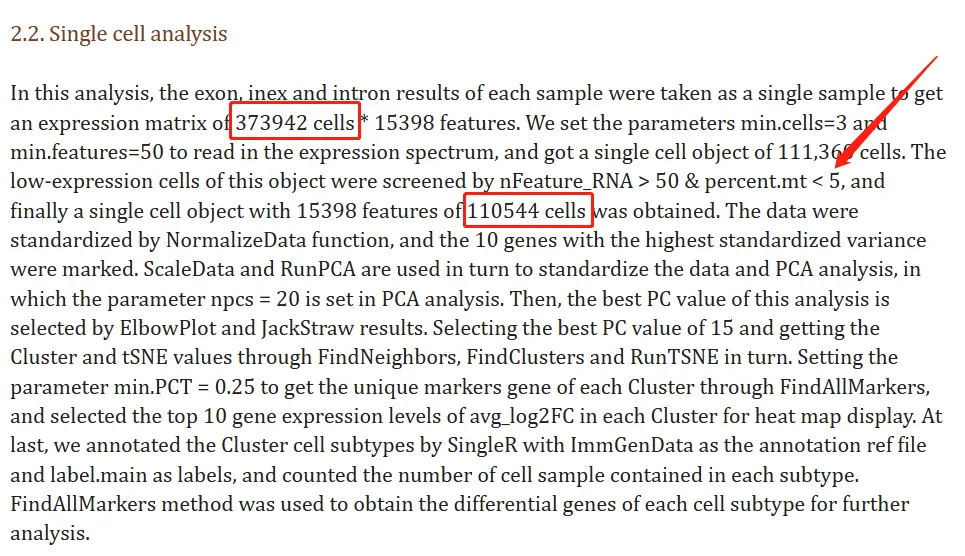

生信分析不能光抄教程
原文：https://mp.weixin.qq.com/s?__biz=MzAwMzIzOTk5OQ==&mid=2247504329&idx=1&sn=c512e032419ef451d1f568e2c26e3277&chksm=9b3ca899ac4b218f95138995de0dc8246712344e80ced309bc70b2ee5446c0294f0634f6e6a6#rd 合集：文献速递 / 漫谈胡侃
今天读到一篇题为"Single-cell RNA and transcriptome sequencing profilers identify immune-associated key genes in the development of diabetic kidney disease"的文章[1]，今年新鲜发表在《Frontiers in Immoology》。虽说是一篇Frontiers，但影响因子在通货紧缩的今年也有7.3了，算是Frontiers的头牌。作为一个超90%均为生信内容的文章，线粒体过滤的步骤中赫然写着**< 5%。乍一看可能没问题，但是这篇文章研究的可是肾脏啊，诸如心脏、肾脏这类静息状态下仍需要消耗大量能量与氧气** 的组织器官来说，怎么可以像PBMC那样用5%的阈值去做线粒体含量的质控呢(可见Seurat教程深入人心)。难怪37w个细胞在过滤后只剩了11w。而主流肾脏scRNA-Seq的文献中，一般的过滤阈值为20%[2,3]，甚至50%[4]。我的看法显然也不用再多说了：

参考文献：
[1]. Zhang X, Chao P, Zhang L, Xu L, Cui X, Wang S, Wusiman M, Jiang H, Lu C. Single-cell RNA and transcriptome sequencing profiles identify immune-associated key genes in the development of diabetic kidney disease. Front Immunol. 2023 Mar 29;14:1030198. [2]. Wu C, Tao Y, Li N, Fei J, Wang Y, Wu J, Gu HF. Prediction of cellular targets in diabetic kidney diseases with single-cell transcriptomic analysis of db/db mouse kidneys. J Cell Commun Signal. 2023 Mar;17(1):169-188.
[3]. Hansen J, Sealfon R, Menon R, Eadon MT, Lake BB, Steck B, Anjani K, Parikh S, Sigdel TK, Zhang G, et al.; Kidney Precision Medicine Project. A reference tissue atlas for the human kidney. Sci Adv. 2022 Jun 10;8(23):eabn4965.[4]. Wu J, Sun Z, Yang S, Fu J, Fan Y, Wang N, Hu J, Ma L, Peng C, Wang Z, Lee K, He JC, Li Q. Kidney single-cell transcriptome profile reveals distinct response of proximal tubule cells to SGLT2i and ARB treatment in diabetic mice. Mol Ther. 2022 Apr 6;30(4):1741-1753.

如何联系我们

 公众号后台消息更新不及时，超过48h便不许回复读者消息，这里给大家留一下领取资料及免费服务器(有root权限的共享服务器)的微信号 ，方便各位随时交流、提建议（科研任务繁重，回复不及时请见谅）。此外呼声一直很高的交流群 也建好了，欢迎大家入群讨论：
公众号后台消息更新不及时，超过48h便不许回复读者消息，这里给大家留一下领取资料及免费服务器(有root权限的共享服务器)的微信号 ，方便各位随时交流、提建议（科研任务繁重，回复不及时请见谅）。此外呼声一直很高的交流群 也建好了，欢迎大家入群讨论：
大家可以阅读完这几篇之后添加给生信入门初学者的小贴士 如何搜索公众号过往发布内容

 您点的每个赞和在看，我都认真当成了喜欢
您点的每个赞和在看，我都认真当成了喜欢